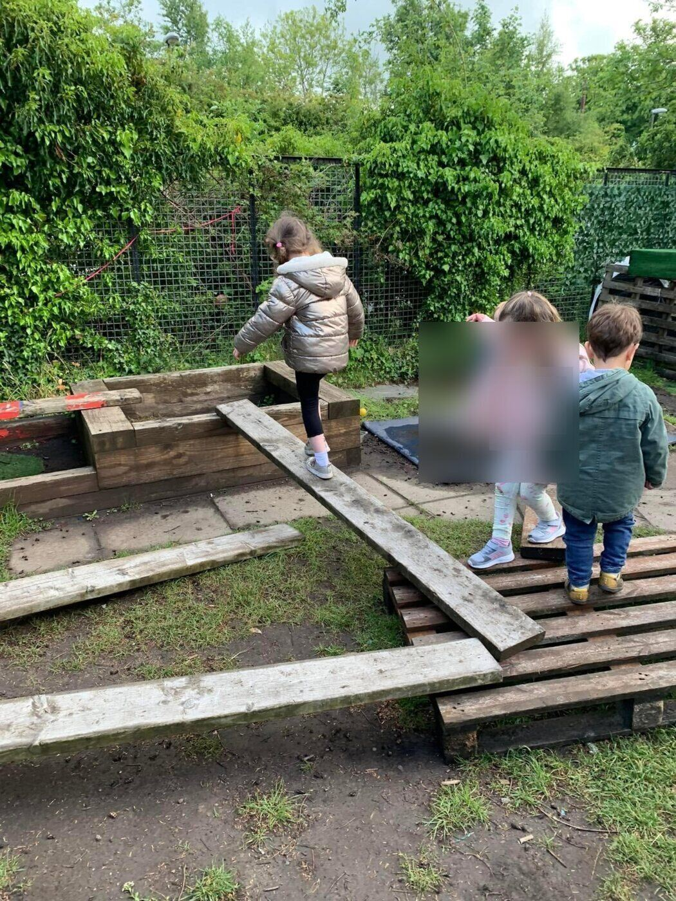
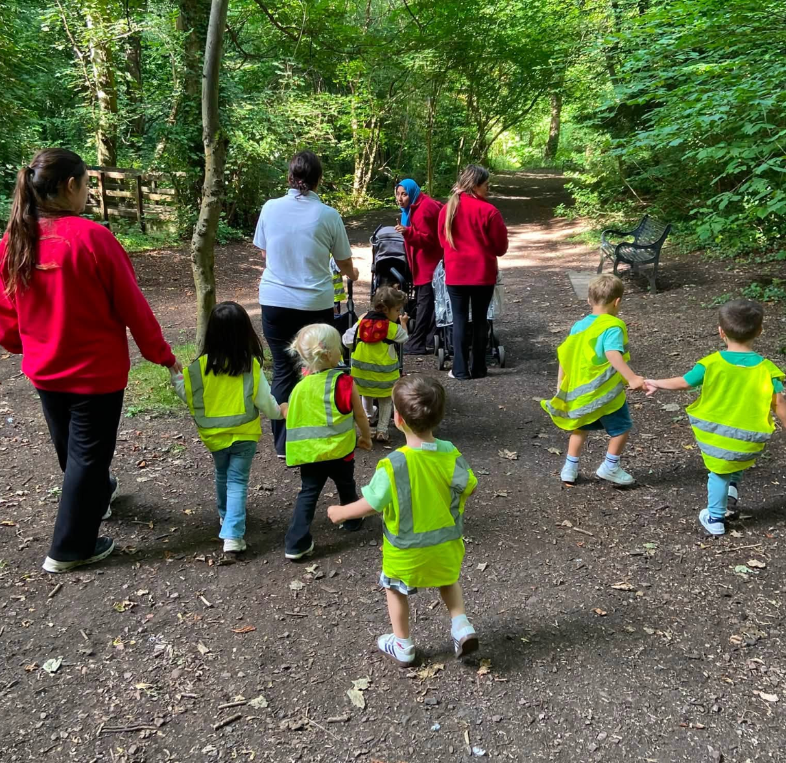

Observe
Practitioners regularly observe each child’s knowledge, interests and development.
About Start Bright
Your child can feel safe to explore, express their personality and enjoy meaningful play in a caring and inspiring environment.

Our aim
At Start Bright Nursery, we aim to provide a safe, happy and stimulating environment where every child feels valued. We support children to learn through play, develop confidence and build strong foundations for their future.

Curriculum and education
Practitioners regularly observe each child’s knowledge, interests and development.
Experiences are planned around individual needs and Scotland’s early-years guidance.
Children learn through stimulating play, creativity, discussion and spontaneous moments.
Learning journals capture development and special moments for families to revisit.
Parents’ voices
At Start Bright, feedback and consultation with parents are at the heart of nursery life. Positive involvement from parents and carers helps us create encouraging learning environments for children.
The nursery plans to hold termly focus groups, inviting parents to take part in meetings and contribute ideas.